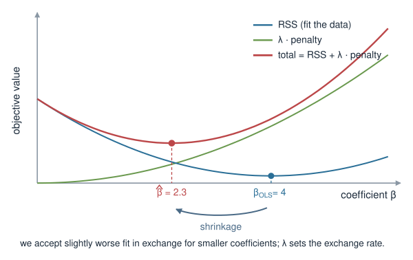
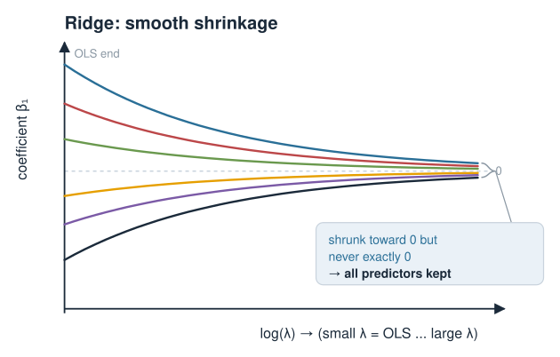
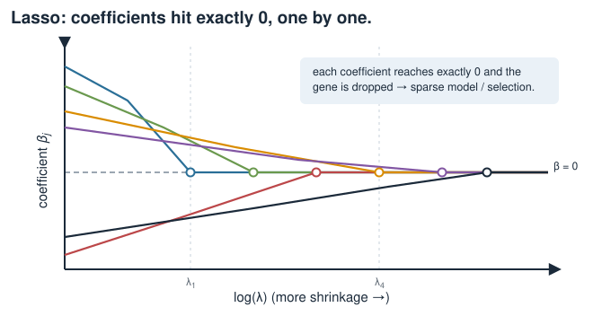
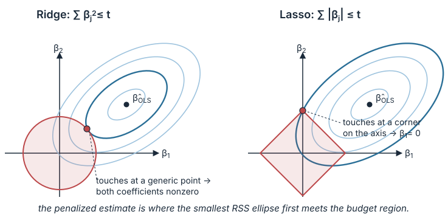
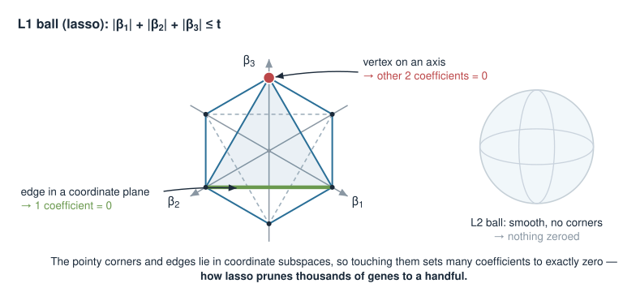

Penalized linear models — Ridge, lasso & elastic net
Quantitative biology and integrative omics
About this lecture
In Linear models we fit \(\mathbf{y} = X\boldsymbol\beta\) by least squares — the best straight-line predictor. That works beautifully when we have many samples and few predictors. In genomics we usually have the opposite: thousands of genes, a few dozen samples. Ordinary least squares breaks. Today we fix it by penalizing large coefficients.
Ridge (L2): shrink all coefficients toward zero — tames collinearity, keeps every predictor.
Lasso (L1): shrink and set some coefficients exactly to zero — automatic feature selection (a sparse model).
Elastic net: a tunable mix of the two.
The geometry behind why lasso zeros coefficients but ridge does not (a diamond vs. a circle).
The tuning parameter \(\lambda\), and how to choose it by cross-validation.
In R: the glmnet package. Biology: selecting a handful of predictive genes from a whole transcriptome.
A note on where this sits
Important
This Penalized linear models block is provisional. It may move to a later dedicated statistics / machine-learning course (Statistics and machine learning in bioinformatics), which is not a prerequisite here. We include it now because penalized regression is the most direct answer to a problem biologists hit immediately — too many genes, too few samples — and it needs nothing beyond the linear-algebra and linear-model machinery we have already built. Treat the cross-validation and model-selection parts as a first look, not the full treatment.
Biology first: too many genes, too few samples
You measure expression of 20 000 genes in 40 patients and want to predict a phenotype (drug response, tumour subtype, survival). You would like a model
The formula needs \(X^\top X\) to be invertible. When \(p > n\), or when predictors are collinear, \(X^\top X\) is singular (or nearly so) — no stable inverse.
OLS has only one goal: fit the training data. With enough predictors it fits it perfectly, including the noise — overfitting.
We need a second goal that competes with “fit the data”: keep the coefficients small.
The idea: add a penalty for big coefficients
Keep the fit term, but add a cost that grows with the size of the coefficients:
\(\lambda \ge 0\) sets the exchange rate between the two goals. \(\lambda = 0\) gives plain OLS; larger \(\lambda\) buys smaller coefficients at the price of some fit.
The shape of the penalty is what distinguishes the three methods:
Method
penalty\((\boldsymbol\beta)\)
name
Ridge
\(\sum_j \beta_j^2\)
L2 (squared)
Lasso
\(\sum_j \lvert\beta_j\rvert\)
L1 (absolute)
Elastic net
mix of both
L1 + L2

First: put predictors on a common scale
The penalty \(\sum_j \beta_j^2\) (or \(\sum_j |\beta_j|\)) adds up coefficients across all predictors. That only makes sense if the predictors are comparable in scale.
A gene measured in large units gets an artificially small coefficient and is under-penalized; a gene in small units is over-penalized. The penalty would depend on your units, which is unacceptable.
Fix: standardize each predictor to mean 0 and standard deviation 1 before fitting. Then a coefficient’s size reflects importance, not units.
The intercept is never penalized — it just anchors the overall level of \(\mathbf{y}\).
glmnet does this standardization for you (standardize = TRUE by default) and reports coefficients back on the original scale.
This has a clean closed form — just add \(\lambda\) to the diagonal of \(X^\top X\):
\[\hat{\boldsymbol\beta}_{\text{ridge}} = (X^\top X + \lambda I)^{-1} X^\top \mathbf{y}\]
Adding \(\lambda I\) makes the matrix invertible again, even when \(X^\top X\) alone is singular (\(p>n\) or collinear). This is why ridge tames collinearity.
Every coefficient is shrunk toward zero, but essentially none becomes exactly zero — ridge keeps all predictors.

When collinear predictors fight
Two co-regulated genes \(g_1, g_2\) carry almost the same signal. OLS is free to write
— wildly different coefficients that predict almost identically. The coefficients are unstable: a tiny change in the data flips them.
Ridge dislikes large coefficients (they cost \(\beta^2\)), so it spreads the weight smoothly and roughly equally between \(g_1\) and \(g_2\) — small, stable, sensible values.
This “sharing” behaviour is a hallmark of the L2 penalty and is often desirable in biology, where truly co-regulated genes should share credit.
One small change — squares become absolute values — has a dramatic effect: as \(\lambda\) grows, coefficients are driven exactly to zero, one after another.
A coefficient of exactly zero means the predictor is dropped. Lasso therefore performs automatic feature selection: it returns a sparse model using only a subset of the genes.
No closed form (the \(|\beta|\) kink is not differentiable at \(0\)); solved numerically — which is what glmnet does.

Why lasso zeros coefficients: the geometry
Equivalent view: minimize RSS subject to a budget on the coefficients.
In two dimensions (\(\beta_1,\beta_2\)) the budget region is:
Ridge → a circle (disk): \(\beta_1^2 + \beta_2^2 \le t\) — smooth, round, no special points.
Lasso → a diamond (square on its corner): \(\lvert\beta_1\rvert + \lvert\beta_2\rvert \le t\) — with sharp corners sitting on the axes.
The RSS forms elliptical contours around the OLS solution. The penalized estimate is where the smallest ellipse first touches the budget region.

The corner is on the axis = a zero coefficient
A corner of the diamond sits on an axis: at that point one of the coordinates is exactly zero (e.g. \(\beta_2 = 0\)).
Expanding ellipses are very likely to first touch a pointy corner rather than a flat edge — so the lasso solution often lands with some coefficients exactly zero.
The circle has no corners, so the touch point almost never sits exactly on an axis — ridge coefficients get small but stay nonzero.
One sentence: the corners of the L1 diamond are what create sparsity; the roundness of the L2 circle is what prevents it.
In higher dimensions the diamond becomes a many-cornered shape whose edges and faces lie in coordinate subspaces — touching one zeros several coefficients at once.

Elastic net: the best of both
Combine both penalties, with a mixing parameter \(\alpha \in [0,1]\):
\(\alpha = 1\) → pure lasso; \(\alpha = 0\) → pure ridge; in between → a blend.
Fixes a real lasso weakness: among a group of correlated genes, lasso tends to pick one arbitrarily and zero the rest. Elastic net’s L2 part encourages grouping — correlated genes are selected (or dropped) together.
Also lets lasso select more than \(n\) predictors (pure lasso caps at \(n\) when \(p>n\)).
A common recipe: keep some sparsity (\(\alpha\) around \(0.5\)) so you still get a short gene list, but with stabler, group-aware selection.
The tuning parameter \(\lambda\)
\(\lambda\) controls how hard we shrink — it trades bias against variance.
\(\lambda \to 0\): back to OLS — low bias, high variance, overfits.
\(\lambda \to \infty\): all coefficients \(\to 0\) — the model becomes a flat line at \(\bar y\): high bias, low variance, underfits.
Somewhere in between is the \(\lambda\) that predicts new data best.
We cannot read the best \(\lambda\) off the training fit — training error just keeps dropping as \(\lambda\to0\). We must estimate performance on data the model did not see.
Split the samples into \(k\) groups (folds), e.g. \(k = 10\).
For each fold: train on the other \(k-1\) folds, predict the held-out fold, record the error.
Average the errors across folds → a cross-validated error for that \(\lambda\).
Repeat over a grid of \(\lambda\) values; pick the \(\lambda\) with the lowest CV error.
Two standard choices glmnet reports:
lambda.min — the \(\lambda\) with minimum CV error.
lambda.1se — the largest\(\lambda\) within one standard error of that minimum: a simpler, sparser model that performs about as well. Often preferred for a short gene list.

In R: glmnet
The glmnet package fits ridge, lasso, and elastic net over a whole grid of \(\lambda\) efficiently.
library(glmnet)# x: samples x genes matrix (n rows, p columns); y: the phenotype vectorx <-as.matrix(expr) # e.g. 40 patients x 20000 genesy <- response # numeric outcome (e.g. drug IC50)# alpha = 1 -> lasso, alpha = 0 -> ridge, 0 < alpha < 1 -> elastic netfit <-glmnet(x, y, alpha =1) # fits a path of lambda valuesplot(fit, xvar ="lambda") # coefficient paths vs log(lambda)print(fit) # Df (# nonzero), %Dev, Lambda per step
glmnetstandardizes predictors internally (standardize = TRUE) and returns coefficients on the original scale.
It does not fit a single \(\lambda\) — it returns the whole path, so you see how coefficients enter and leave as \(\lambda\) changes.
In R: cross-validated fit and the gene list
set.seed(1) # CV is random; fix the seed for reproducibilitycvfit <-cv.glmnet(x, y, alpha =1, nfolds =10)plot(cvfit) # CV error vs log(lambda), with lambda.min / .1secvfit$lambda.min # lambda with lowest CV errorcvfit$lambda.1se # sparser model within 1 SE# coefficients at the chosen lambdabeta <-coef(cvfit, s ="lambda.1se") # a sparse vector; most entries are 0selected <-rownames(beta)[which(beta !=0)]selected # the genes the model kept <- the biology# predict the phenotype for new samplespredict(cvfit, newx = x_new, s ="lambda.1se")
For a binary phenotype (responder vs. not) use family = "binomial" — penalized logistic regression, same machinery.
Biology: from transcriptome to a testable signature
Predictive gene signatures. Lasso / elastic net on expression + drug response returns a small panel of genes that predict response — a candidate biomarker you can take to a targeted assay.
Interpretability & cost. A 20-gene panel can be run cheaply in the clinic; a 20 000-gene model cannot. Sparsity is not just statistics — it is assay design.
Stability matters. With \(n \approx 40\), different CV splits can select somewhat different genes. Report a stable core, prefer lambda.1se, and consider elastic net so correlated pathway members are kept together.
Not causal. A selected gene is predictive, not proven causal — collinearity means a dropped gene may be just as relevant as the one kept. Validate on the bench.
Which penalty when?
Situation
Reach for
Many collinear predictors, want to keep them all
Ridge
Want a short, interpretable subset (feature selection)
Lasso
\(p \gg n\)and correlated groups of predictors
Elastic net
Purely predictive, interpretability not needed
Ridge (often lowest error)
Need a testable gene panel
Lasso / elastic net
All three reduce variance / overfitting relative to OLS; they differ in whether and how they zero coefficients.
Always standardize (glmnet does it), never penalize the intercept, and choose \(\lambda\) by cross-validation.
Summary
Concept
Key fact
Problem
\(p \gg n\) or collinearity → OLS unstable / overfits